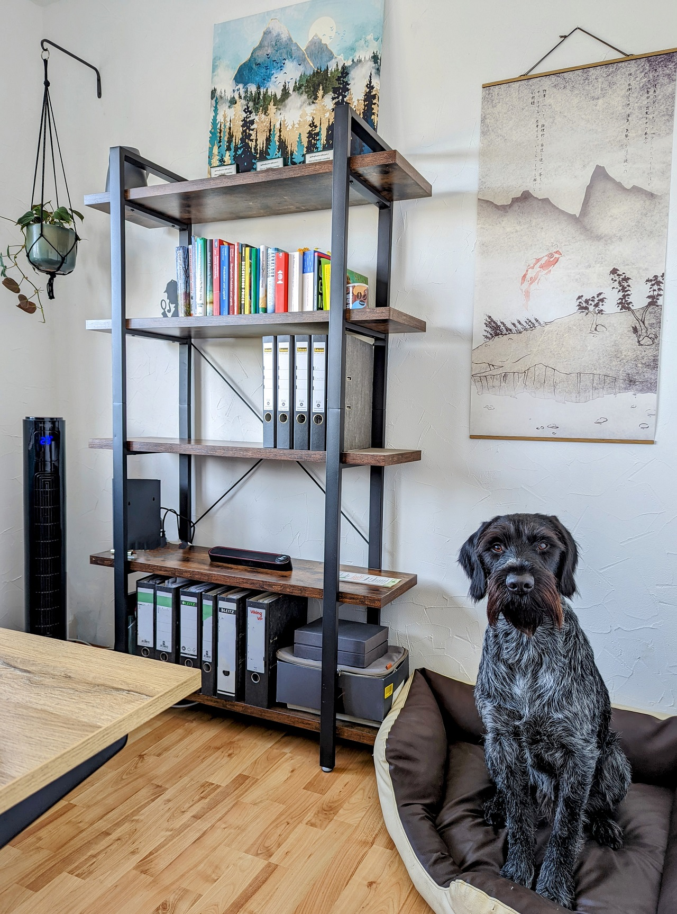

Workspace
Since my days at the University of Cologne, I have embraced working from-home, dedicating time and effort to create my ideal workspace.
My desk is a hub of modern technology, featuring a stand-up table that I particularly cherish. Not just for the sake of good posture,
but I find that standing up injects a lively energy into video conferences.
 And of course, my workspace wouldn't be complete without the presence of my most handsome companion. But he does not only offer companionship; we often go on hikes during lunch breaks or whenever I need a burst of creativity. Together, we've so far explored the trails of 8 different countries, making memories and drawing inspiration from each adventure.